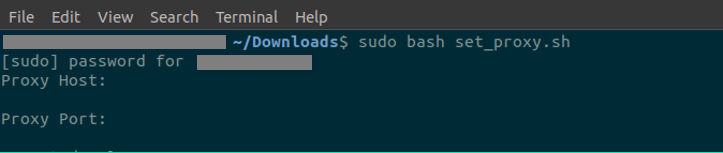
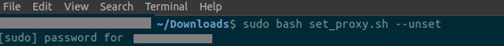

Proxy Master
One Script to Set It All!
Download
set_proxy-master.sh
Instructions
Open the downloads directory in a terminal window.
Execute
sudo bash set_proxy-master.sh
and enter the password.
Enter the proxy host and port on prompt.
(172.16.2.30:8080 for KGP)
Going Home?
Execute
sudo bash set_proxy-master.sh --unset
and enter the password.
Still Need To Manually Set Proxy On:
Some Users might need to change Settings->Network->Proxy to Manual from Off.
To Set Proxy:

To Unset Proxy:

Contribute to this project on
Github
| Powered by
MetaKGP
with ♥